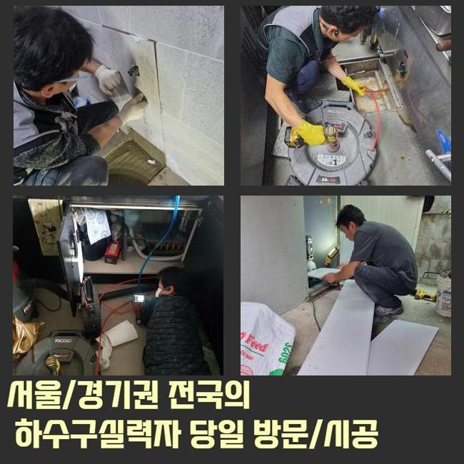
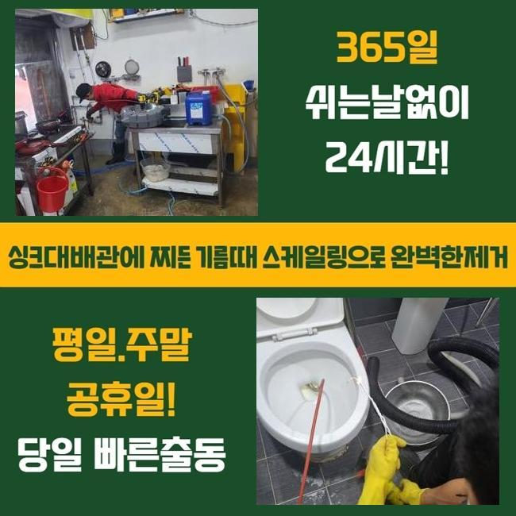
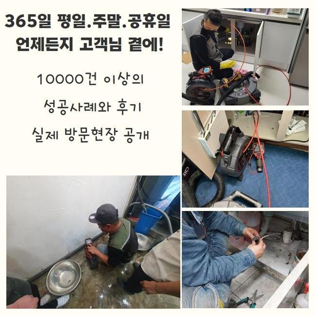
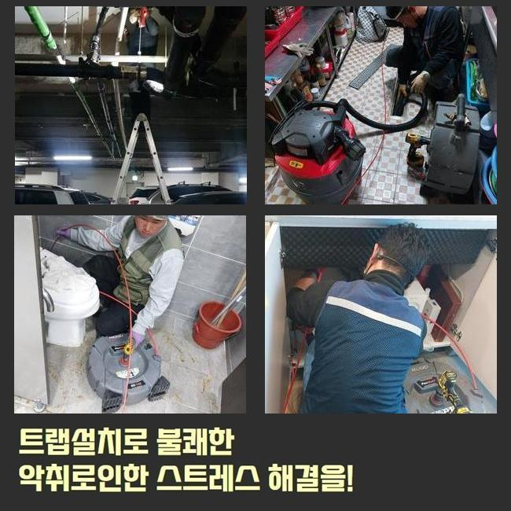
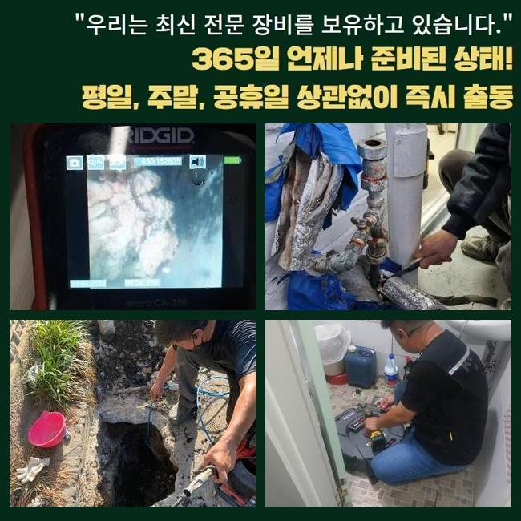
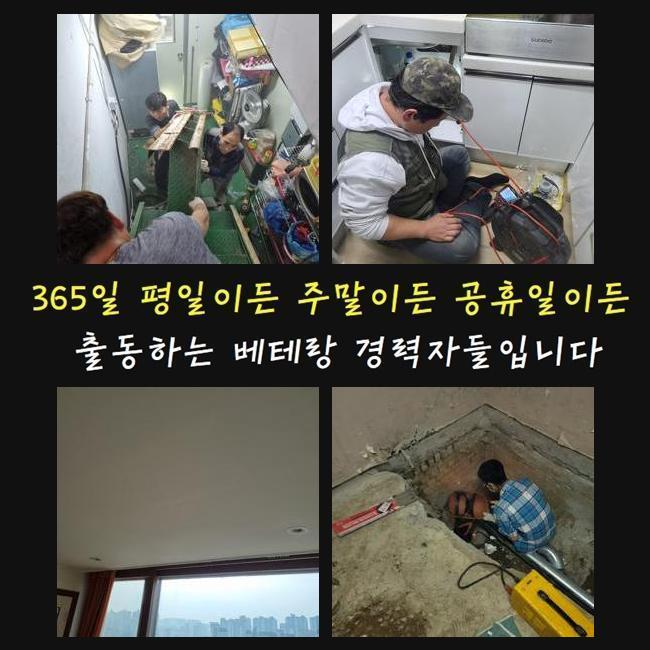
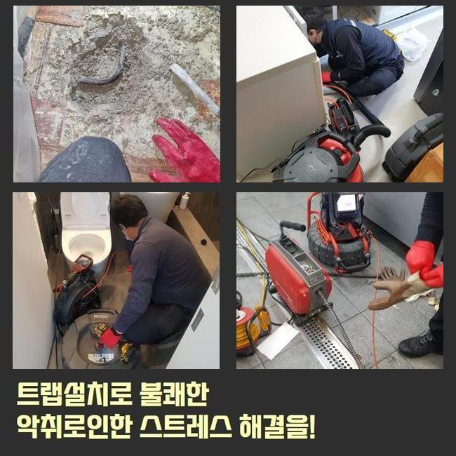

🏠 파주 검산동싱크대뚫음 장단면 하수관고압세척 누수탐지
파주 검산동 싱크대막힘 전문 시공 후기

📋 작업 개요
- 위치: 파주 검산동, 검산동, 파주
- 서비스 유형: 싱크대막힘, 하수구막힘, 배관막힘, 누수수리, 역류해결, 뚫는업체, 배관청소, 고압세척, 설비공사
- 작업 일시: 2025. 6. 5. 2:45
- 업체명: 하수구수사대 (010-5615-2118)
🔍 문제 상황
갑작스레 하수도가 막혔을 경우 까다롭기 마련이에요
가벼운 막힘이라면 유튜브나 검색을 통한 수 많은 방법들을 활용해볼수 있으며 셀프조치를 통하여 해결하는것이 가능하다고 할수있죠
이러한 현상이 빈번하게 반복적으로 일어나거나 배수구악취가 일어난 상태라면 전문업체를 불러서 막힌이유에 대하여 명확히 짚어내 처리하는게 가장 좋죠
현장을 방문해서 확인하고 상태에 적합할수있는 기계들을 이용하여 이물질을 꼼꼼히 제거해야만 쾌적한 하수구를 유지할수 있겠습니다
유선상으로 상태에 대해 알려주셔도 작업장소로 이동하여 파악해보면 다를수가 있는 까닭에 유선상담은 지양해주시는게 좋고 빠르게 작업을 문의하는게 현명하다고 할수있어요
얼마전에 전화주신 고객분께선 욕실배수관이 막혀버리며 욕실이 역류문제로 바닥쪽이 잠겨버려서 조속한 점검이 요구되었죠
신속히 와달라는 내용에 무슨 상황인지 예상되었으며 통화를 끊은후 각종 도구들을 준비하여 출동했어요
파주 검산동싱크대뚫음 장단면 하수관고압세척 누수탐지
장소에 방문하니 의뢰자분의 화장실모습은 바닥에 하수도가 막히게되어 상당한 양의 물이 고여있었어요
이와같은 상황이라고 한다면 효과적으로 시공하고자 막힘문제를 일으킨 원인에 대해 파악하는것이 우선적으로 착수되어야 한답니다

🔎 원인 분석
💡 전문가 진단: 정밀 진단 장비를 사용하여 슬러지의 고착 여부를 판명하고 타격/세척 작업을 실시했습니다.
정확한 원인이 밝혀져야지만 올바른 방법대로 작업이 가능하고 재발하는 문제를 막을수있죠
정확히 파악하여 의뢰자께서 궁금했던 부분에 대하여 설명드린뒤 장비를 준비해서 시공을 시작했습니다
바닥주변에 넘치게된 오수를 바깥쪽으로 배출해내고자 석션기계를 써서 흡수했죠
오물이 고인상황에서 작업과정을 이어가는것은 불가능하므로 하수구주변을 깔끔히 해주는게 필수적입니다
다음과정에 관련된 내용도 고객님에게 자세히 일러드린후 전체적으로 차질이없이 이어갔답니다
석션도구를 써서 고여있던 하수를 없애면 소량의 이물이 올라오는 경우도 있는데요
하수구를 뚫기위해선 하수구안을 정확하게 파악해야 한답니다
그렇지만 기술성이 뛰어나도 육안만으로 하수구안쪽을 살펴본다는건 불가하기에 배관CCTV를 활용했습니다
육안만으로 확인하기 쉽지않은 깜깜한 배관속을 내시경끝에 달려있는 조명과 카메라가 배관상태를 확인시켜주는 기기라고 생각하시면 됩니다
배관촬영기로 안쪽부분을 체크해보니 알수없는 오염물질들과 상당량으로 모발이 쌓여있는게 발견되었죠
굳어버린 이물은 석션만으로 해결할수없고 샤프트기를 활용하여 뭉쳐버리게된 이물질들을 소거시켜야 해요

🔧 작업 과정
문제를 타파하려면 배수관 깊은쪽을 확인해야하는 수립계획이 필요했어요
더 깊은곳으로 카메라노즐을 투입해 보았죠
내시경화면을 확인해보니 깊은부분도 오염물과 머리카락들이 덩어리진채 통로자체를 막아버려 청소작업이 필수였죠
앞전에 설명드렸지만 덩어리진 잔해물은 흡입하는 작업만으로 배출시키는것은 어렵겠습니다
플렉스샤프트의 분해력으로 석회물을 자잘한 상태로 만들어야해요
분쇄공정을 마무리한후 석션작업을 진행해서 만에하나 분해된 잔해물들이 배관안쪽에 남겨지는것을 방지한답니다
스케일링을 진행하며 막힘문제와 관련하여 예방꿀팁을 안내드리면서 누적된 잔존물들을 제거해내는 공사를 반복했죠
2~3번 같은과정을 거쳐야만 하수구안에 쌓인 오염물질을 파악할수있고 전체적으로 제거하여 청소작업을 마무리해낼수 있답니다
반복해서 플렉스샤프트로 조각난 잔해물은 썩션장비로 빨아올리는 수리를 끝마치고 내시경기기를 투입하여 꼼꼼히 세척되었는지 확인해보았죠
이렇게 꼼꼼하게 작업에 임했더니 막힘증세의 시초였던 다양한 이물질들이 발견되지 않은것을 확인했고 배수검사도 고객분과 같이 진행했답니다
빠져나온 이물을 어떤식으로 처리해내는지 또한 중요하죠
실수로라도 배관안에 유입시키면 재차 막힘문제를 발현시킬수 있답니다
그렇다보니 외부로 빠져나온 오염물은 채나 망에 걸러준뒤 하수들만 배관속에 흘려보내는것이 좋으며 조각된 이물은 쓰레기봉투로 처리하죠
꼼꼼한 스케일링을 반복하여 착수한끝에 막힘문제를 해결한 저희들은 물길자체가 문제없이 뚫리게된것을 살펴볼수 있었답니다
거주지에서 오래동안 생활하셨거나 일상영위시 배수구관리가 소홀한 상태라면 금일 장소처럼 하수구청소가 요구될 것입니다
방지법에 관해서 간단하게 설명드리면 하수구망이나 하수구트랩을 설치해서 예방관리를 해볼수가 있어요


✅ 작업 완료
하수구망은 잔해물을 걸러주므로 약간의 오염물들이 빨려 들어가는것을 방지시켜 준답니다
배관트랩은 하수구내에서 퍼지는 악취증상을 막아준답니다
욕실배수구가 막히게되어 답답함을 느끼고 계신경우 일러드린바와 같이 배관업체를 통하여 처리를 하시는게 관리적으로나 전체적으로 현명한 방법이라고 말해드릴수 있습니다
하수구문제를 내버려두신다면 역류나 누수같은 현상을 발생시킬수가 있죠 저희쪽에 문의를 주실경우 빠른처리로 불편함이 느껴진 부분을 타파해 드릴게요!
이것말고도 궁금증이 풀리지 않으신게 남아있을 경우에는 편하실때 의뢰주셔서 상담요청 주셔도 됩니다 상세히 돕도록 하겠습니다




⚠️ 베란다 누수 및 방수 관리 방법
- ✅ 비가 많이 올 때 창틀 주변이나 아래층 천장에 얼룩이 생기는지 정기적으로 확인해 보세요.
- ✅ 우수관 주변 실리콘 마감이 들뜨거나 깨진 틈새가 있는지 손상 여부를 수시로 체크하세요.
- ✅ 베란다 바닥 타일의 줄눈(메지)이 소실되면 그 틈으로 물이 침투하여 누수가 유발됩니다.
- ✅ 누수 의심 증상 발견 시 방치하면 아래층 손실이 커지므로 즉시 전문가의 진단을 받으십시오.
💡 핵심 정리
- 확실한 장비 작업(내시경 점검 및 샤프트 스케일링)으로 원인을 뿌리 뽑습니다.
- 작업 후 1년 이내에 동일한 부위 재발 시 100% 무상 A/S 서비스를 보장합니다.
- 서울 · 경기 · 인천 전 지역에 24시간 언제든 긴급 출동할 수 있도록 항시 대기 중입니다.
❓ 자주 묻는 질문 (FAQ)
🚨 파주 검산동 싱크대막힘 문제로 고민이신가요?
정확한 원인 진단과 확실한 시공으로 재발 없는 해결을 약속드립니다.
24시간 긴급 출동 | 서울 · 경기 · 인천 전지역 | 1년 내 재발 시 무상 A/S